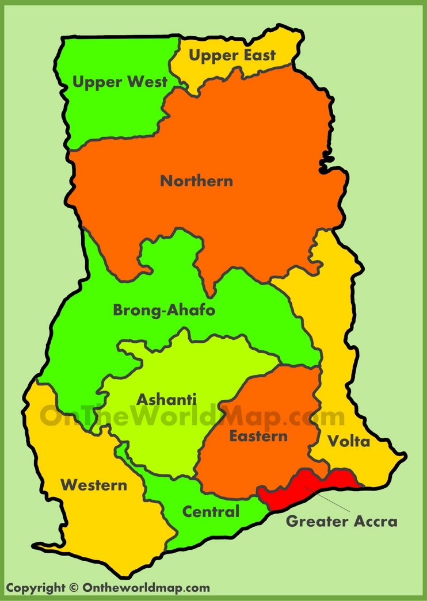

Back to Home

https://viewspace.org/
https://www.cameronsworld.net/
https://useplink.com/en/
https://prashantsani.com/
https://albinotonnina.com/
https://www.ojieame.design/
https://www.anthonydesigner.com/
http://sftheme.com/demos/onewp/
https://danzalah.xyz/
https://jacekjeznach.com/